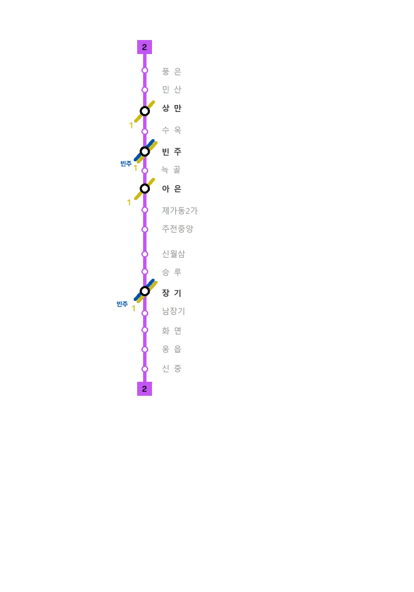

빈주 도시철도 2호선
|
|||
|
 빈주도시철도공사 2000호대 전동차
|
|||
| 노선도 | |||
|---|---|---|---|
|
[ 펼치기 · 접기 ]
|
|||
| 노선 정보 | |||
| 노선 분류 | 도시철도 | ||
| 차량 분류 | 경전철 (고무차륜 K-AGT) | ||
| 기점 | 풍은역 | ||
| 종점 | 신중역 (현재) 고전역 (예정) | ||
| 역 수 | 16개 (운영 중) 19개 (전체) | ||
| 구성 노선 | 빈주 도시철도 2호선 | ||
| 상징색 | 보라색 (#C455F6) | ||
| 개통일 | 2025년 12월 1일 (1단계) | ||
| 소유자 | 빈주시 | ||
| 운영사 | 빈주도시철도공사 | ||
| 사용차량 | 2000호대 (V2000) | ||
| 차량기지 | 풍은차량사업소 | ||
| 노선 제원 | |||
| 노선연장 | 15.6km (1단계) | ||
| 궤간 | 1,700mm (안내궤조) | ||
| 선로구성 | 복선 | ||
| 급전방식 | 직류 750V 제3궤조 | ||
| 신호방식 | RF-CBTC (무인운전) | ||
| 지상구간 | 전 구간 | ||
| 통행방향 | 우측통행 | ||
| 개통 연혁 |
2025. 12. 01. 풍은 ↔ 신중 개통 |
||

1. 개요
"빈주의 하늘을 달리는 보랏빛 롤러코스터"
덕빈북도 빈주시의 두 번째 도시철도 노선이자 최초의 고무차륜 경전철(K-AGT) 노선이다.
운영은 빈주도시철도공사가 맡고 있으며, 노선 색상은 강렬하고 통통 튀는 보라색(#C455F6)이다.
고무바퀴 특유의 통통 튀는 승차감이 일품이다. 사실 승차감이 안 좋은 거라 카더라
2. 건설 목적
1호선이 빈주시를 동서로 일직선 관통하는 '대동맥'이라면, 2호선은 1호선의 수혜를 단 1도 받지 못하는 가원구 남부 물류/주거단지와 장기구 남부 신도시를 거대한 'U'자 형태로 싹 쓸어 담아 빈성구 구도심(빈주역)으로 강제로 꽂아주는 '모세혈관' 역할을 한다.
특히 가원구의 물류 거점인 풍은동 일대와 장기구의 신흥 귀족 타운인 월삼동 주민들이 빈주역으로 향할 때 겪던 극심한 버스 환승 고통을 한 방에 해결하기 위해 야심 차게 기획되었다. 과거 출퇴근 시간마다 콩나물시루 같은 만원 버스를 3대씩 보내고도 타지 못해 절규하던 월삼동 주민들의 피와 땀, 그리고 끊임없는 민원 폭탄이 서려 있는 노선이다.[1]당시 시청 교통과 전화선이 마비될 정도로 악성 민원이 쏟아졌다고 한다.
3. 역사
- 2010년대 후반: 1호선 개통 후 교통망 확충에 뽕을 뽑은(?) 빈주시가 교통 소외 지역의 불만을 잠재우기 위해 신속하게 경전철 사업을 추진했다. 초기 예비타당성 조사에서 한 번 미끄러지는 고배를 마셨으나, 분노한 시민들의 트럭 시위가 시청 앞을 점령하자 빛의 속도로 수정안이 통과되었다.
- 2025년 12월 1일: 대망의 1단계 구간(풍은~신중) 개통. 지상을 달리는 경전철 특성상 개통 첫 주말에는 열차를 타보려는 시민들과 뷰를 즐기려는 연인들로 인해 롯데월드 모노레일급 대기열이 형성되었다.
- 2026년 4월: 그동안 1호선과 광역전철 홍보를 혼자 독박 쓰며 다크서클이 턱 밑까지 내려왔던 1호선 선배 박빛나를 구원하기 위해, 2호선 전담 마스코트인 맑은 눈의 광인 김소빈이 전격 투입되었다.[2]당시 직장인 커뮤니티(블라인드 등)에서는 "드디어 빛나 주임님이 정시 퇴근을 한다!"며 눈물의 축제가 벌어졌다.
4. 환경
지하 깊은 곳을 두더지처럼 뚫고 다니는 1호선과 달리, 2호선은 전 구간 지상 2층 높이의 고가철도로 건설되었다. 덕분에 날씨가 맑은 날 열차를 타면 빈주시 전체의 스카이라인을 조망할 수 있는 훌륭한 시티투어 뷰를 제공한다.
더군다나 무인운전(RF-CBTC) 시스템이라 운전실이 따로 없기 때문에, 열차 맨 앞유리에 달라붙어 롤러코스터 뷰를 감상하려는 꼬마들과 철덕들의 자리 쟁탈전이 매일같이 치열하게 벌어진다. 어른이들이 꼬마들을 밀어내고 차지하는 흉흉한 모습도 간혹 목격된다
다만 고가철도의 숙명상 소음 및 사생활 침해 민원이 개통 초기부터 엄청나게 쏟아졌다. 특히 선로와 바짝 붙어있는 아파트 3~4층 주민들은 "거실에서 런닝구 입고 TV 보다가 승객들과 강제로 눈이 마주친다"며 극대노했고, 이 때문에 주거 밀집 구역(월삼동 등)을 지날 때는 거대한 캡슐 같은 반투명 방음터널이 칭칭 감겨 있어 뷰를 감상하던 승객들에게 약간의 답답함을 유발하기도 한다.
4.1. 안내방송 및 BGM
정확한 안내방송 문장과 표현을 원한다면 차내 안내방송은 안내방송/열차/도시철도를, 역내 안내방송은 안내방송/역을 참고하기 바랍니다.
| 한국어 | 빈주도시철도공사 전속 성우 (김소빈 컨셉) |
|---|---|
| 영어 | Binju Metro Standard English (TTS 혼용) |
| 중국어 / 일본어 | 빈주역, 장기역 등 주요 환승/종착역 송출 |
| BGM | 출발: 보랏빛 아침 / 환승: 명랑한 발걸음 / 종착: 보랏빛 노을 |
차내 안내방송과 승강장 진입 방송은 빈주 2호선의 통통 튀는 맑눈광, 김소빈(CV. 김연우)의 생기발랄하고 하이텐션인 음성으로 송출된다. 매일같이 지친 K-직장인의 영혼이 서린 1호선 빛나 선배의 방송과 달리, 소빈의 방송은 "고객님~ 출입문에 기대시면 과태료 부과 대상이에요오~ 꺄르르!" 하는 식으로 가장 해맑은 목소리로 법적 제재를 때려 박는 합법적 광기가 묻어나는 것이 압권이다. 월요일 아침 출근길에 듣다 보면 묘하게 킹받아서 잠이 다 깬다
특히 일본어 안내방송의 경우 무려 하나자와 카나 특유의 극한 애교 톤(일명 연애 서큘레이션 톤)으로 송출되어, 열차 안의 철덕과 오타쿠들이 환승도 잊은 채 역을 서성거리게 만드는 주범이 되고 있다.[3]일본 관광객들조차 "이 지방 소도시 노선 안내방송 성우가 왜 이렇게 호화롭냐"며 역무실에 물어보고 간다는 후문이 있다.
5. 소재지
노선의 선형이 거대한 U자를 그리고 있어 빈주시의 3개 구를 골고루 맛보는 노선이다.
- 풍은(V201) ~ 주전중앙(V209): 거대한 화물 터미널이 떡하니 버티고 있는 가원구 풍은동에서 시작해, 1호선과 교차하는 상만동을 거쳐 빈성구 구도심(빈주역) 한복판을 찍어버린 뒤, 다시 기묘하게 꺾여 가원구 주전동으로 빠져나오는 괴상한 행보를 보인다.
- 신월삼(V210) ~ 신중(V216): 여기서부터는 장기구의 콧대 높은 핵심 신흥 주거지(월삼동)를 지나 1호선 헬게이트 환승역(장기역)을 거친 후, 장기구 북서부 끝자락인 미천동(신중역) 벌판까지 시원하게 쭉 뻗어 나간다.
6. 향후 계획
- 2단계 구간 연장 (계획 중): 현재 종점인 신중역에서 북동쪽으로 90도 꺾어 빈성구의 서구, 대암, 고전역까지 3개 역을 추가로 연장하는 방안이 추진 중이다. 완공될 경우 도심과 묘하게 단절되어 있던 빈성구의 거대 주거타운인 고전면 주민들이 두 손 들고 환호할 전망이지만, 언제나 그렇듯 예산 확보 문제로 개통일은 며느리도 모른다.
7. 전동차 정보
현대로템에서 제작한 빈주도시철도공사 2000호대 전동차 (V2000)가 투입되었다. 3량 1편성의 아담하고 귀여운 사이즈이며, 시끄러운 쇠바퀴가 아닌 고무차륜(K-AGT)을 사용하여 곡선 구간에서의 소음이 적고 등판 능력이 무척 뛰어나다. 외관은 2호선의 통통 튀는 정체성을 듬뿍 담은 보라색(Vivid Purple)으로 산뜻하게 도색되어 있다. 완전 무인운전으로 돌아가지만, 시스템 오류를 대비한 비상 대기 및 순회 검표를 위해 가끔 김소빈 같은 직원들이 앞칸에 탑승해 시민들과 인사를 나누기도 한다.
8. 역 목록
 빈주 1호선
빈주 1호선
 빈주권 광역철도
빈주권 광역철도
8.1. 1단계 개통 구간 (운행 중)
| 역번호 | 역명 | 한자 역명 | 거리(km) | 접속 노선 | 승강장 | 횡단 | 행정동 | 소재지(구) |
|---|---|---|---|---|---|---|---|---|
| V201 | 풍 은 | 豊 銀 | 0.0 | - | 상대식 | ○ | 풍은동 | 가원구 |
| V202 | 민 산 | 民 散 | 1.2 | - | 상대식 | × | 풍은동 | |
| V203 | 상 만 | 上 灣 | 2.0 |
|
상대식 | ○ | 상만동 | |
| V204 | 수 옥 | 水 屋 | 3.1 | - | 상대식 | ○ | 수옥동 | |
| V205 | 빈 주 | 彬州驛 | 4.2 |
|
상대식 | △ | 동신동 | 빈성구 |
| V206 | 늑 골 | 肋 骨 | 5.0 | - | 상대식 | ○ | 동신동 | |
| V207 | 아 은 | 阿 銀 | 6.1 |
|
상대식 | △ | 이은동 | |
| V208 | 제가동2가 | 齊家洞2街 | 7.6 | - | 상대식 | △ | 이은동 | |
| V209 | 주전중앙 | 主典中央 | 8.7 | - | 상대식 | ○ | 주전1동 | 가원구 |
| V210 | 신월삼 | 新月森 | 9.5 | - | 상대식 | △ | 월삼3동 | 장기구 |
| V211 | 승 루 | 承 累 | 10.4 | - | 상대식 | △ | 시능동 | |
| V212 | 장 기 | 長 崎 | 11.5 |
|
상대식 | ○ | 장기4동 | |
| V213 | 남장기 | 南長崎 | 12.6 | - | 상대식 | ○ | 장기1동 | |
| V214 | 화 면 | 花 面 | 13.5 | - | 상대식 | △ | 장기5동 | |
| V215 | 웅 읍 | 雄 邑 | 14.7 | - | 상대식 | ○ | 미천동 | |
| V216 | 신 중 | 新 中 | 15.6 | - | 상대식 | ○ | 미천동 |
8.2. 추후 개통 예정 구간 (2단계)
현재 계획 중인 2단계 구간으로, 종점인 신중역을 넘어 빈성구의 핵심 주거지로 깊숙이 뻗어 나갈 예정이다.
| 역번호 | 역명 | 한자 역명 | 거리(km) | 접속 노선 | 승강장 | 횡단 | 소재지(구) |
|---|---|---|---|---|---|---|---|
| V217 | 서 구 | 西 口 | 16.7 | - | 상대식 | ○ | 빈성구 |
| V218 | 대 암 | 對 癌 | 20.2 | - | 상대식 | ○ | |
| V219 | 고 전 | 高 田 | 21.3 | - | 상대식 | ○ |
9. 역별 승하차 통계
개통 초기(2025년 말 기준) 집계된 대략적인 승하차 추이를 보면 2호선이 얼마나 전략적으로 잘 지어진 노선인지 증명된다.
- 트리플 환승의 위엄: 1호선과 마찬가지로 빈주역과 장기역이 2호선에서도 최상위권 승하차량을 여유롭게 싹쓸이하고 있다. 1, 2호선을 서로 갈아타려는 막대한 인파가 매일같이 맞물려, 출퇴근 시간대 고가역사가 묘하게 흔들리는 것 같다는 민원까지 들어올 지경이다.
- 상만역의 재발견: 기점 풍은역 인근의 화물 터미널 인부들과 대중교통 사각지대였던 가원구 남부 주민들이 1호선을 갈아타기 위해 상만역으로 무섭게 쏟아져 들어오고 있다. 상만역은 1, 2호선 환승객 덕분에 연일 행복한 비명을 지르는 중이다.
- 민산역의 함정: 전 역을 통틀어 유일하게 반대편 승강장 횡단이 불가능(×)한 구조를 가진 민산역은, 역을 착각해 내렸다가 개찰구를 빠져나가지 못하고 갇힌 승객들이 호출 버튼을 누르며 역무원을 찾고 절규하는 핫플레이스(?)가 되어버렸다.
10. 여담 및 마스코트
▲ 2호선의 맑은 눈의 광인, 김소빈 주임
1. 맑은 눈의 광인 겸 합법적 진상 퇴치기
2호선 개통과 함께 매일 야근에 절여져 죽어가던 1호선 빛나 주임을 구원하기 위해 나타난 2호선 전담 신입 마스코트 김소빈(23세, ENFP).
부당한 대우에도 속앓이만 하던 선배 빛나와 달리, 철저한 노동법과 회사 사규로 중무장하고 "고객님! 지금 폭언하셨으니 철도안전법 위반으로 경찰 부를까요? 헤헤^^"라며 가장 해맑은 미소로 진상들을 도륙 내는 합법적 광기를 여과 없이 보여준다.
[4]대학 시절 심리학과 전공을 살려 난동을 피우는 취객의 내면의 상처(?)를 아주 집요하게 들쑤셔 그 자리에 주저앉아 오열하게 만든 민산역 전설이 입에서 입으로 전해진다.
2. QR 스나이퍼와 무적의 피지컬
단말기 건카타를 구사하던 선배의 뒤를 이어, 개찰구 50m 밖에서도 무임승차 시 울리는 빛 패턴을 순식간에 읽고 달려가 모바일 QR 단말기를 이마에 찍어버리는 무시무시한 스나이퍼다. 게다가 154cm의 쪼꼬만 체구임에도 퇴근 후 기구 필라테스와 헬창 오빠들의 조기교육이 만들어낸 압도적 코어 힘으로, 멱살을 잡으려는 취객의 손목을 단 한 손으로 제압해버린다.
3. 마라탕, 탕후루, 그리고 법인카드
뼛속까지 MZ세대답게 점심 식사는 무조건 마라탕 3단계, 식후엔 아샷추(아이스티+샷추가)와 탕후루를 입에 달고 산다. 부서 회식을 꼰대 고깃집 대신 마라탕 집으로 강제 유도해 사장님의 땀구멍을 폭발시키며 법인카드를 가차 없이 긁게 만드는 위엄을 떨치기도 했다. 업무 틈틈이 역사 내 대형 거울 앞에서 '인스타 릴스'를 찍는 게 소소한 낙이라고 한다.
- 무서운 성우 라인업: 한국판 성우는 오버워치 솜브라 역으로 유명한 김연우 성우가 하이톤 팩폭러를 찰지게 연기하며, 일본판은 무려 하나자와 카나다! '연애 서큘레이션'급의 극한 애교 톤으로 "고객님~ 지금 하신 욕설은 모욕죄예요오~♡"라고 해맑게 속삭여서 일본 팬들에게 '합법적 얀데레'라는 엄청난 칭호를 얻었다. [5]1호선 빛나 성우(사쿠라 아야네)가 현실에선 하나자와 카나의 광적인 열성 팬이라, 녹음실에서 빛나의 잇몸이 마르지 않는다는 성우 개그도 철덕들 사이에서 크게 흥하고 있다.
-
러브라이브! 스피리추얼 밈 (와시와시 노선): 1호선 황금색이 하나마루와 엮였다면, 2호선 상징색 보라색()은 하필 《러브라이브!》의 등장인물 토죠 노조미 상징색과 채도까지 소름 돋게 완벽히 일치한다! 이 때문에 소빈이 타로 카드를 들고 진상을 퇴치하며 "스피리추얼 파워 주입!"을 외치거나 승객들에게 강제로 와시와시(주물주물) 형벌을 내린다는 기괴하고 찰진 팬아트가 쏟아지고 있다.
이쯤 되면 빈주도시철도는 그냥 럽라 콜라보를 공식 선언하는 게 빠를지도 모른다
11. 각주
- [1] 당시 시청 교통과 전화선이 마비될 정도로 악성 민원이 쏟아졌다고 한다.
- [2] 당시 직장인 커뮤니티(블라인드 등)에서는 "드디어 빛나 주임님이 정시 퇴근을 한다!"며 눈물의 축제가 벌어졌다.
- [3] 일본 관광객들조차 "이 지방 소도시 노선 안내방송 성우가 왜 이렇게 호화롭냐"며 역무실에 물어보고 간다는 후문이 있다.
- [4] 대학 시절 심리학과 전공을 살려 난동을 피우는 취객의 내면의 상처(?)를 아주 집요하게 들쑤셔 그 자리에 주저앉아 오열하게 만든 민산역 전설이 입에서 입으로 전해진다.
- [5] 1호선 빛나 성우(사쿠라 아야네)가 현실에선 하나자와 카나의 광적인 열성 팬이라, 녹음실에서 빛나의 잇몸이 마르지 않는다는 성우 개그도 철덕들 사이에서 크게 흥하고 있다.